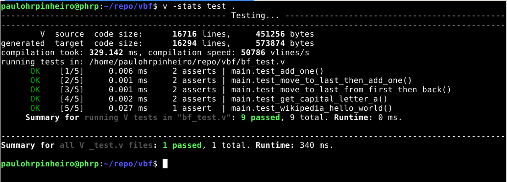

Um Interpretador Brainfuck em Linguagem V
Mais uma implementação de Brainfuck, como desculpa para aprender a linguagem V

Testes OK!
Sabadão preguiçoso
Estava lendo a página inicial do projeto da linguagem V e senti-me desafiado pela seguinte ideia:
You can learn the entire language by going through the documentation in an hour, and in most cases there's only one way to do something. This results in simple, readable, and maintainable code.
Fui lá eu, li a documentação, mas não do começo ao fim. Eu "bati o olho" e comecei com meu problema preferido e, num sábado muito preguiçoso, entre uma feijoada, soneca, interrupções de gatos e minhas filhas, idas e vindas na documentação, nos exemplos, e experimentações no interpretador e erros nos testes, fiz meu interpretador de Brainfuck, ainda que incompleto.
Brainfuck?
É uma linguagem de programação muito simples que torna as coisas muito complicadas. Por isso o seu nome.
Opera-se sobre um bloco de memória, todas as operações sempre na posição corrente, podendo-se somar ou subtrair o valor de cada item. Pode-se avançar ou retroceder nesse bloco, imprimir o valor, receber um valor externo e armazenar.
A linguagem tem os seguintes comandos:
+ soma 1 ao valor atual
- subtrai em 1 o valor atual
> avança a posição atual no bloco de memória
< retrocede a posição atual no bloco de memória
. imprime o valor na posição atual
, recebe um valor e armazena na posição atual
[ se o valor na posição atual for zero, pula a execução para o comando após a instrução ] correspondente
] se o valor na posição atual não é zero, volta a execução para o [ correspondente
Foi criada por Urban Müller. Aqui um vídeo com uma palestra dele sobre a linguagem:
https://www.youtube.com/watch?v=gjm9irBs96U&t=8722s
Maiores informações e links para esse maravilhoso submundo:
https://en.wikipedia.org/wiki/Brainfuck
Tenho uma antiga implementação em Go também, com uma pegada diferente:
https://github.com/paulohrpinheiro/mfbil
V Brainfuck
Minha implementação não está completa, pois falta o comando , para input de dados, que nunca uso em meus testes com a linguagem Brainfuck. Mas para testar a V penso que seja uma boa ideia implementar, e testar módulos, especialmente o cli.
Aqui o código:
https://github.com/paulohrpinheiro/vbf
Linguagem V
Mostrou-se mesmo uma linguagem simples, de fácil aprendizado, e, conforme minha preferência (ambígua, pois programo em Python mó cota, garantindo os boletos) estava procurando uma que fosse compilada, com tipagem estática.
O projeto é novo, a documentação não é extensiva e completa, muitas coisas se descobrem ou olhando para os muitos e diversos exemplos ou testando mesmo. Tem belas promessas de rapidez e comparativos impressionantes de velocidades, mas qual linguagem nova não tem?
Eu uso o asdf para gerenciar linguagens e versões que uso, pois assim não fico com os gerenciadores individuais de cada uma. Para a linguagem V não consegui usar, pois nem o clássico hello world consegui compilar com a instalação dele.
Usando as instruções do site da linguagem V, compilando a partir do código fonte, não tive problemas, e o processo é muito rápido e simples, gerando um binário para tudo.
Como de costume, há um playground para aprendizado e testes:
https://v-wasm.vercel.app/
Uma ideia interessante de V é que as variáveis são imutáveis por padrão, e os tipos podem ser inferidos na declaração, via inicialização. Os testes são fáceis de escrever, o que me fez simpatizar mais ainda com a linguagem.
O tratamento de erros, que ainda não utilizei é algo interessante também, com Options e diversas formas para o tratamento e propagação de erros:
https://github.com/vlang/v/blob/master/doc/docs.md#optionresult-types-and-error-handling
Mais uma vez, assunto para a próxima sprint.
Concorrência e tipos genéricos estão à mão, outros assuntos importantes, além de cláusulas defer e match.
Não se preocupe com o formato de seu programa, basta rodar o seguinte comando antes do commit:
v fmt . -w
Falando em comandos, para gerar a saída detalhada dos testes:
v -stats test .
E para compilar o programa:
v .
Ou o nome completo do seu arquivo.
Para executar o interpretador, é só invocar o compilador sem parâmetros:
$ v
Welcome to the V REPL (for help with V itself, type `exit`, then run `v help`).
V 0.2.2 1c7fb65
Use Ctrl-C or `exit` to exit, or `help` to see other available commands
>>>
Seguem agora alguns pontos mais básicos da linguagem.
Funções
Pode-se fazer um programa sem a função main, mas caso tenha-se várias funções, o ponto de entrada é ela:
fn main() {
println('Olá')
}
Como se pode notar, blocos são encapsulados por chaves, e strings por aspas simples.
Funções com parâmetros devem declarar o tipo dos parâmetros:
fn funcao(param int) {
println(param)
}
E também vemos uma função importante da linguagem, a println.
Quando retornam um valor, devem indicar o tipo usar return:
fn d(param int) int {
return 2*param
}
Variáveis
Devem ser inicializadas e declaradas, dentro de um bloco, nunca globais, e podem ter seu tipo inferido, e por padrão são imutáveis:
a := 10 // a é imutável, do tipo int (32 bits)
b := "algo" // b é imutável, do tipo string
mut c := 10 // v é mutável, do tipo int (32 bits)
c += 10 // agora c vale 20
Arrays
Os arrays devem ser de apenas um tipo e são declarados como:
memory [50]int
Que declara memory como um array com capacidade para 50 inteiros de 32 bits, que são inicializados com o valor 0.
Pode-se inicializar com outro valor:
>>> mut array := [10]int{init:5}
>>> array
[5, 5, 5, 5, 5, 5, 5, 5, 5, 5]
>>> array[3] = 10
>>> [5, 5, 5, 10, 5, 5, 5, 5, 5, 5]
>>> array.len
>>> 10
E temos a propriedade len que dos dá o tamanho.
Constantes
Constantes não podem ser definidas no escopo de funções, apenas no de módulo.
const (
memory_len = 50
)
Interpolação de strings
A impressão formatada pode, em grande parte, ser resolvida pela interpolação de strings:
>>> a := 10
>>> println('O valor de variável a é: $a')
O valor de variável a é: 10
>>>
Estruturas
Estruturas usam a palavra reservada struct para defini-la:
struct Result {
fix int
mut:
memory [50]int
output string
}
Nesse exemplo, fix é imutável.
Loop
O for é responsável pelos loops, em várias formas, sendo aqui usada na forma mais simples, como condição:
mut pos_program := 0
for pos_program < program.len {
...
pos_program += 1
}
Match
Quer dar um match em V?
mut instruction := program[pos_program]
match instruction {
`+` {
result.memory[pos_memory] += 1
}
`-` {
}
else {}
}
O else é obrigatório quando a lista de casos não é exaustiva.